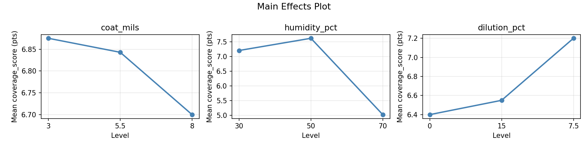
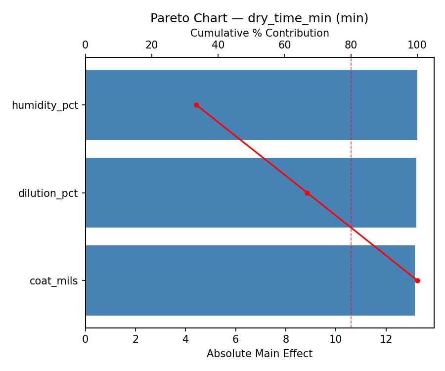
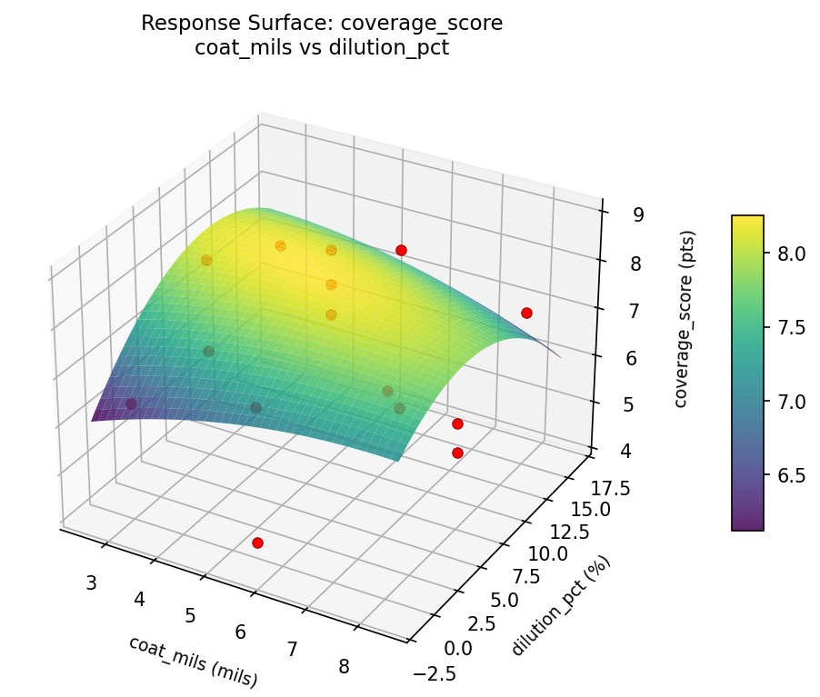
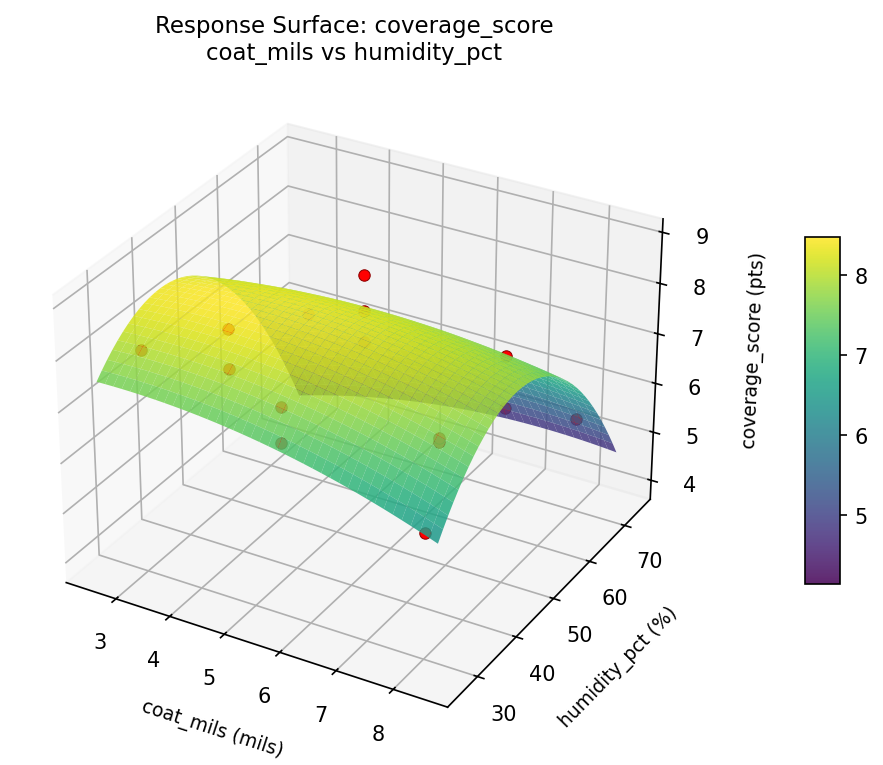
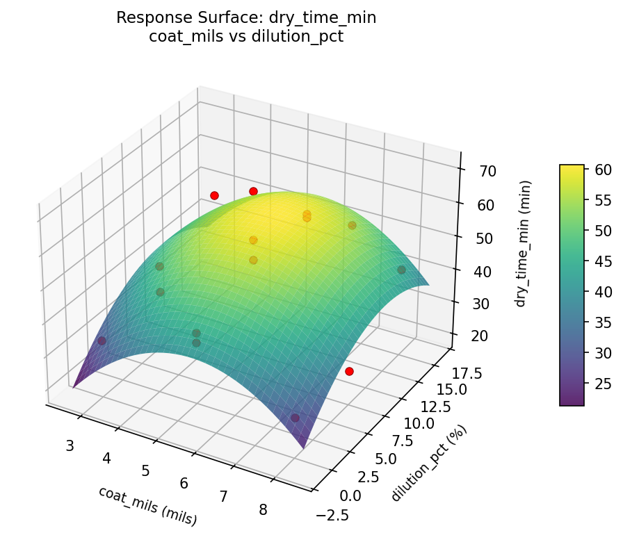
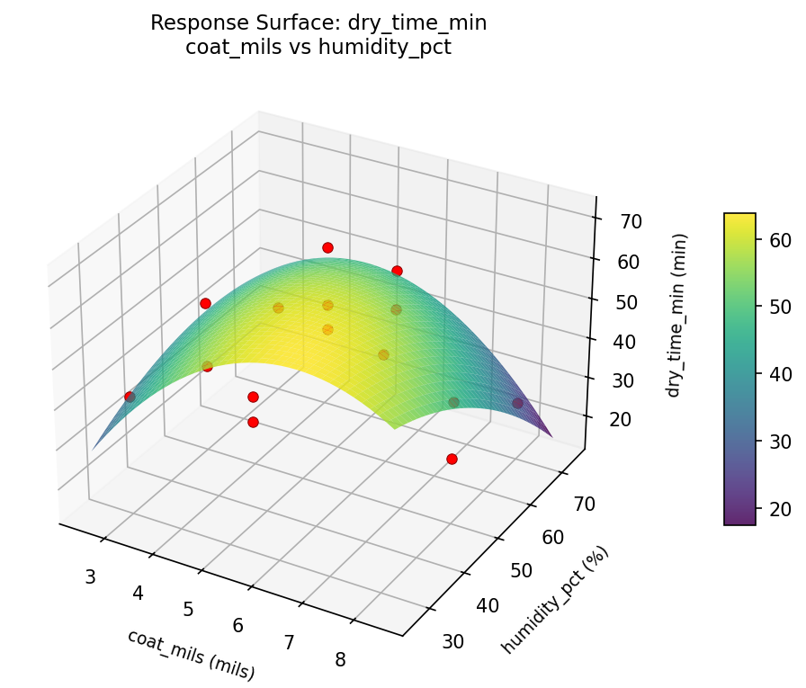

Summary
This experiment investigates interior paint finish quality. Box-Behnken design to maximize coverage and minimize drying time by tuning coat thickness, humidity, and paint dilution ratio.
The design varies 3 factors: coat mils (mils), ranging from 3 to 8, humidity pct (%), ranging from 30 to 70, and dilution pct (%), ranging from 0 to 15. The goal is to optimize 2 responses: coverage score (pts) (maximize) and dry time min (min) (minimize). Fixed conditions held constant across all runs include paint type = latex_eggshell, surface = drywall.
A Box-Behnken design was chosen because it efficiently fits quadratic models with 3 continuous factors while avoiding extreme corner combinations — requiring only 15 runs instead of the 8 needed for a full factorial at two levels.
Quadratic response surface models were fitted to capture potential curvature and factor interactions. The RSM contour plots below visualize how pairs of factors jointly affect each response.
Key Findings
For coverage score, the most influential factors were coat mils (46.7%), dilution pct (28.9%), humidity pct (24.4%). The best observed value was 8.9 (at coat mils = 5.5, humidity pct = 70, dilution pct = 15).
For dry time min, the most influential factors were dilution pct (53.0%), humidity pct (24.0%), coat mils (23.0%). The best observed value was 26.0 (at coat mils = 8, humidity pct = 50, dilution pct = 0).
Recommended Next Steps
- Run confirmation experiments at the predicted optimal settings to validate the model.
- Consider whether any fixed factors should be varied in a future study.
Experimental Setup
Factors
| Factor | Low | High | Unit |
|---|
coat_mils | 3 | 8 | mils |
humidity_pct | 30 | 70 | % |
dilution_pct | 0 | 15 | % |
Fixed: paint_type = latex_eggshell, surface = drywall
Responses
| Response | Direction | Unit |
|---|
coverage_score | ↑ maximize | pts |
dry_time_min | ↓ minimize | min |
Configuration
{
"metadata": {
"name": "Interior Paint Finish Quality",
"description": "Box-Behnken design to maximize coverage and minimize drying time by tuning coat thickness, humidity, and paint dilution ratio"
},
"factors": [
{
"name": "coat_mils",
"levels": [
"3",
"8"
],
"type": "continuous",
"unit": "mils"
},
{
"name": "humidity_pct",
"levels": [
"30",
"70"
],
"type": "continuous",
"unit": "%"
},
{
"name": "dilution_pct",
"levels": [
"0",
"15"
],
"type": "continuous",
"unit": "%"
}
],
"fixed_factors": {
"paint_type": "latex_eggshell",
"surface": "drywall"
},
"responses": [
{
"name": "coverage_score",
"optimize": "maximize",
"unit": "pts"
},
{
"name": "dry_time_min",
"optimize": "minimize",
"unit": "min"
}
],
"settings": {
"operation": "box_behnken",
"test_script": "use_cases/137_paint_finish_quality/sim.sh"
}
}
Experimental Matrix
The Box-Behnken Design produces 15 runs. Each row is one experiment with specific factor settings.
| Run | coat_mils | humidity_pct | dilution_pct |
|---|
| 1 | 5.5 | 30 | 0 |
| 2 | 5.5 | 50 | 7.5 |
| 3 | 8 | 50 | 15 |
| 4 | 8 | 50 | 0 |
| 5 | 5.5 | 50 | 7.5 |
| 6 | 5.5 | 50 | 7.5 |
| 7 | 3 | 50 | 15 |
| 8 | 8 | 30 | 7.5 |
| 9 | 5.5 | 30 | 15 |
| 10 | 8 | 70 | 7.5 |
| 11 | 3 | 50 | 0 |
| 12 | 5.5 | 70 | 15 |
| 13 | 3 | 30 | 7.5 |
| 14 | 3 | 70 | 7.5 |
| 15 | 5.5 | 70 | 0 |
Step-by-Step Workflow
1
Preview the design
$ doe info --config use_cases/137_paint_finish_quality/config.json
2
Generate the runner script
$ doe generate --config use_cases/137_paint_finish_quality/config.json \
--output use_cases/137_paint_finish_quality/results/run.sh --seed 42
3
Execute the experiments
$ bash use_cases/137_paint_finish_quality/results/run.sh
4
Analyze results
$ doe analyze --config use_cases/137_paint_finish_quality/config.json
5
Get optimization recommendations
$ doe optimize --config use_cases/137_paint_finish_quality/config.json
6
Multi-objective optimization
With 2 competing responses, use --multi to find the best compromise via Derringer–Suich desirability.
$ doe optimize --config use_cases/137_paint_finish_quality/config.json --multi
7
Generate the HTML report
$ doe report --config use_cases/137_paint_finish_quality/config.json \
--output use_cases/137_paint_finish_quality/results/report.html
Features Exercised
| Feature | Value |
|---|
| Design type | box_behnken |
| Factor types | continuous (all 3) |
| Arg style | double-dash |
| Responses | 2 (coverage_score ↑, dry_time_min ↓) |
| Total runs | 15 |
Analysis Results
Generated from actual experiment runs using the DOE Helper Tool.
Response: coverage_score
Top factors: coat_mils (46.7%), dilution_pct (28.9%), humidity_pct (24.4%).
ANOVA
| Source | DF | SS | MS | F | p-value |
|---|
| Source | DF | SS | MS | F | p-value |
| coat_mils | 2 | 7.1688 | 3.5844 | 1.218 | 0.3454 |
| humidity_pct | 2 | 2.0527 | 1.0263 | 0.349 | 0.7158 |
| dilution_pct | 2 | 3.1455 | 1.5728 | 0.534 | 0.6056 |
| Lack | of | Fit | 6 | 8.8437 | 1.4739 |
| Pure | Error | 2 | 5.8867 | | |
| Error | 8 | 14.7303 | 2.9433 | | |
| Total | 14 | 27.0973 | 1.9355 | | |
Pareto Chart

Main Effects Plot

Normal Probability Plot of Effects

Half-Normal Plot of Effects

Model Diagnostics

Response: dry_time_min
Top factors: dilution_pct (53.0%), humidity_pct (24.0%), coat_mils (23.0%).
ANOVA
| Source | DF | SS | MS | F | p-value |
|---|
| Source | DF | SS | MS | F | p-value |
| coat_mils | 2 | 61.3262 | 30.6631 | 0.113 | 0.8942 |
| humidity_pct | 2 | 88.5762 | 44.2881 | 0.164 | 0.8517 |
| dilution_pct | 2 | 336.7548 | 168.3774 | 0.623 | 0.5605 |
| Lack | of | Fit | 6 | 1453.6095 | 242.2683 |
| Pure | Error | 2 | 540.6667 | | |
| Error | 8 | 1994.2762 | 270.3333 | | |
| Total | 14 | 2480.9333 | 177.2095 | | |
Pareto Chart

Main Effects Plot

Normal Probability Plot of Effects

Half-Normal Plot of Effects

Model Diagnostics

Response Surface Plots
3D surfaces fitted with quadratic RSM. Red dots are observed data points.
coverage score coat mils vs dilution pct

coverage score coat mils vs humidity pct

coverage score humidity pct vs dilution pct

dry time min coat mils vs dilution pct

dry time min coat mils vs humidity pct

dry time min humidity pct vs dilution pct

Multi-Objective Optimization
When responses compete, Derringer–Suich desirability finds the best compromise.
Each response is scaled to a 0–1 desirability, then combined via a weighted geometric mean.
Overall Desirability
D = 0.8437
Per-Response Desirability
| Response | Weight | Desirability | Predicted | Dir |
|---|
coverage_score |
1.5 |
|
8.10 0.7998 8.10 pts |
↑ |
dry_time_min |
1.0 |
|
28.00 0.9141 28.00 min |
↓ |
Recommended Settings
| Factor | Value |
|---|
coat_mils | 5.5 mils |
humidity_pct | 70 % |
dilution_pct | 0 % |
Source: from observed run #1
Trade-off Summary
Sacrifice = how much worse than single-objective best.
| Response | Predicted | Best Observed | Sacrifice |
|---|
dry_time_min | 28.00 | 26.00 | +2.00 |
Top 3 Runs by Desirability
| Run | D | Factor Settings |
|---|
| #8 | 0.7261 | coat_mils=8, humidity_pct=70, dilution_pct=7.5 |
| #4 | 0.7063 | coat_mils=3, humidity_pct=50, dilution_pct=0 |
Model Quality
| Response | R² | Type |
|---|
dry_time_min | 0.6300 | linear |
Full Multi-Objective Output
============================================================
MULTI-OBJECTIVE OPTIMIZATION
Method: Derringer-Suich Desirability Function
============================================================
Overall desirability: D = 0.8437
Response Weight Desirability Predicted Direction
---------------------------------------------------------------------
coverage_score 1.5 0.7998 8.10 pts ↑
dry_time_min 1.0 0.9141 28.00 min ↓
Recommended settings:
coat_mils = 5.5 mils
humidity_pct = 70 %
dilution_pct = 0 %
(from observed run #1)
Trade-off summary:
coverage_score: 8.10 (best observed: 8.90, sacrifice: +0.80)
dry_time_min: 28.00 (best observed: 26.00, sacrifice: +2.00)
Model quality:
coverage_score: R² = 0.0455 (linear)
dry_time_min: R² = 0.6300 (linear)
Top 3 observed runs by overall desirability:
1. Run #1 (D=0.8437): coat_mils=5.5, humidity_pct=70, dilution_pct=0
2. Run #8 (D=0.7261): coat_mils=8, humidity_pct=70, dilution_pct=7.5
3. Run #4 (D=0.7063): coat_mils=3, humidity_pct=50, dilution_pct=0
Full Analysis Output
=== Main Effects: coverage_score ===
Factor Effect Std Error % Contribution
--------------------------------------------------------------
coat_mils 1.6143 0.3592 46.7%
dilution_pct 0.9964 0.3592 28.9%
humidity_pct 0.8429 0.3592 24.4%
=== ANOVA Table: coverage_score ===
Source DF SS MS F p-value
-----------------------------------------------------------------------------
coat_mils 2 7.1688 3.5844 1.218 0.3454
humidity_pct 2 2.0527 1.0263 0.349 0.7158
dilution_pct 2 3.1455 1.5728 0.534 0.6056
Lack of Fit 6 8.8437 1.4739 0.501 0.7836
Pure Error 2 5.8867 2.9433
Error 8 14.7303 2.9433
Total 14 27.0973 1.9355
=== Summary Statistics: coverage_score ===
coat_mils:
Level N Mean Std Min Max
------------------------------------------------------------
3 4 6.5000 1.5642 4.2000 7.7000
5.5 7 7.5143 1.1908 5.5000 8.9000
8 4 5.9000 1.1662 4.3000 7.1000
humidity_pct:
Level N Mean Std Min Max
------------------------------------------------------------
30 4 6.2000 2.2524 4.2000 8.2000
50 7 7.0429 1.0830 5.5000 8.9000
70 4 7.0250 0.9639 6.1000 8.0000
dilution_pct:
Level N Mean Std Min Max
------------------------------------------------------------
0 4 7.1500 0.7371 6.3000 8.1000
15 4 7.3250 0.9708 6.1000 8.2000
7.5 7 6.3286 1.8025 4.2000 8.9000
=== Main Effects: dry_time_min ===
Factor Effect Std Error % Contribution
--------------------------------------------------------------
dilution_pct 11.2857 3.4371 53.0%
humidity_pct 5.1071 3.4371 24.0%
coat_mils 4.8929 3.4371 23.0%
=== ANOVA Table: dry_time_min ===
Source DF SS MS F p-value
-----------------------------------------------------------------------------
coat_mils 2 61.3262 30.6631 0.113 0.8942
humidity_pct 2 88.5762 44.2881 0.164 0.8517
dilution_pct 2 336.7548 168.3774 0.623 0.5605
Lack of Fit 6 1453.6095 242.2683 0.896 0.6128
Pure Error 2 540.6667 270.3333
Error 8 1994.2762 270.3333
Total 14 2480.9333 177.2095
=== Summary Statistics: dry_time_min ===
coat_mils:
Level N Mean Std Min Max
------------------------------------------------------------
3 4 46.0000 4.2426 41.0000 50.0000
5.5 7 43.8571 16.6175 26.0000 71.0000
8 4 48.7500 15.3704 33.0000 69.0000
humidity_pct:
Level N Mean Std Min Max
------------------------------------------------------------
30 4 47.7500 18.1361 28.0000 71.0000
50 7 43.1429 10.6994 26.0000 57.0000
70 4 48.2500 15.4785 33.0000 69.0000
dilution_pct:
Level N Mean Std Min Max
------------------------------------------------------------
0 4 38.0000 9.3452 28.0000 49.0000
15 4 47.2500 16.5000 33.0000 71.0000
7.5 7 49.2857 13.3256 26.0000 69.0000
Optimization Recommendations
=== Optimization: coverage_score ===
Direction: maximize
Best observed run: #4
coat_mils = 5.5
humidity_pct = 70
dilution_pct = 15
Value: 8.9
RSM Model (linear, R² = 0.4644, Adj R² = 0.3184):
Coefficients:
intercept +6.8133
coat_mils -0.1000
humidity_pct +0.2500
dilution_pct +1.2250
RSM Model (quadratic, R² = 0.7149, Adj R² = 0.2018):
Coefficients:
intercept +7.2000
coat_mils -0.1000
humidity_pct +0.2500
dilution_pct +1.2250
coat_mils*humidity_pct -0.0000
coat_mils*dilution_pct +0.6500
humidity_pct*dilution_pct +0.4500
coat_mils^2 +0.3750
humidity_pct^2 -0.9750
dilution_pct^2 -0.1250
Curvature analysis:
humidity_pct coef=-0.9750 concave (has a maximum)
coat_mils coef=+0.3750 convex (has a minimum)
dilution_pct coef=-0.1250 concave (has a maximum)
Notable interactions:
coat_mils*dilution_pct coef=+0.6500 (synergistic)
humidity_pct*dilution_pct coef=+0.4500 (synergistic)
Predicted optimum (from linear model, at observed points):
coat_mils = 5.5
humidity_pct = 70
dilution_pct = 15
Predicted value: 8.2883
Surface optimum (via L-BFGS-B, linear model):
coat_mils = 3
humidity_pct = 70
dilution_pct = 15
Predicted value: 8.3883
Model quality: Weak fit — consider adding center points or using a different design.
Factor importance:
1. dilution_pct (effect: 2.5, contribution: 57.7%)
2. humidity_pct (effect: 1.2, contribution: 29.3%)
3. coat_mils (effect: 0.6, contribution: 13.0%)
=== Optimization: dry_time_min ===
Direction: minimize
Best observed run: #13
coat_mils = 8
humidity_pct = 50
dilution_pct = 0
Value: 26.0
RSM Model (linear, R² = 0.2313, Adj R² = 0.0216):
Coefficients:
intercept +45.7333
coat_mils -5.3750
humidity_pct +5.7500
dilution_pct -3.1250
RSM Model (quadratic, R² = 0.7993, Adj R² = 0.4380):
Coefficients:
intercept +46.6667
coat_mils -5.3750
humidity_pct +5.7500
dilution_pct -3.1250
coat_mils*humidity_pct -10.7500
coat_mils*dilution_pct +14.5000
humidity_pct*dilution_pct -0.7500
coat_mils^2 -1.8333
humidity_pct^2 +3.4167
dilution_pct^2 -3.3333
Curvature analysis:
humidity_pct coef=+3.4167 convex (has a minimum)
dilution_pct coef=-3.3333 concave (has a maximum)
coat_mils coef=-1.8333 concave (has a maximum)
Notable interactions:
coat_mils*dilution_pct coef=+14.5000 (synergistic)
coat_mils*humidity_pct coef=-10.7500 (antagonistic)
humidity_pct*dilution_pct coef=-0.7500 (antagonistic)
Predicted optimum (from quadratic model, at observed points):
coat_mils = 3
humidity_pct = 70
dilution_pct = 7.5
Predicted value: 70.1250
Surface optimum (via L-BFGS-B, quadratic model):
coat_mils = 3
humidity_pct = 30
dilution_pct = 15
Predicted value: 16.9167
Model quality: Good fit — general trends are captured, some noise remains.
Factor importance:
1. humidity_pct (effect: 11.5, contribution: 39.9%)
2. coat_mils (effect: 10.8, contribution: 37.3%)
3. dilution_pct (effect: 6.6, contribution: 22.8%)